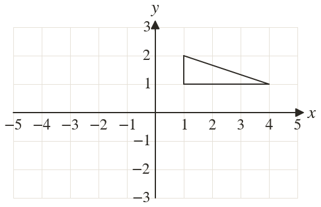
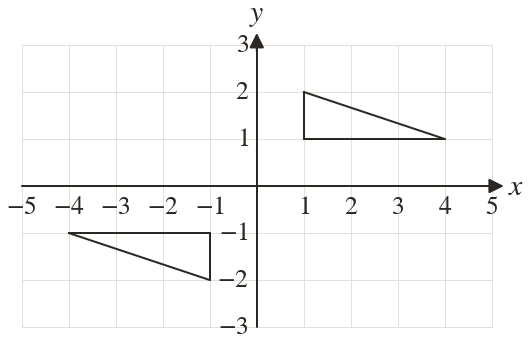

Westonbirt Maths · Symmetry and Transformations
Rotational Symmetry
Name: ______________________ Date: ____________
1
A pattern of order is made from one part. How many copies are added, and through what angle is each turned?
2
A pattern of order is made from one part. How many copies are added, and through what angle is each turned?
3
A pattern of order is made from one part. Through what angle is each copy turned?
4
Each copy of a part is turned from the one before. What order is the pattern?
5
Complete the pattern so that it has rotational symmetry of order about
Ext
A pattern has order
One copy is turned from the part. Through what angle is the other copy turned?
One copy is turned from the part. Through what angle is the other copy turned?

